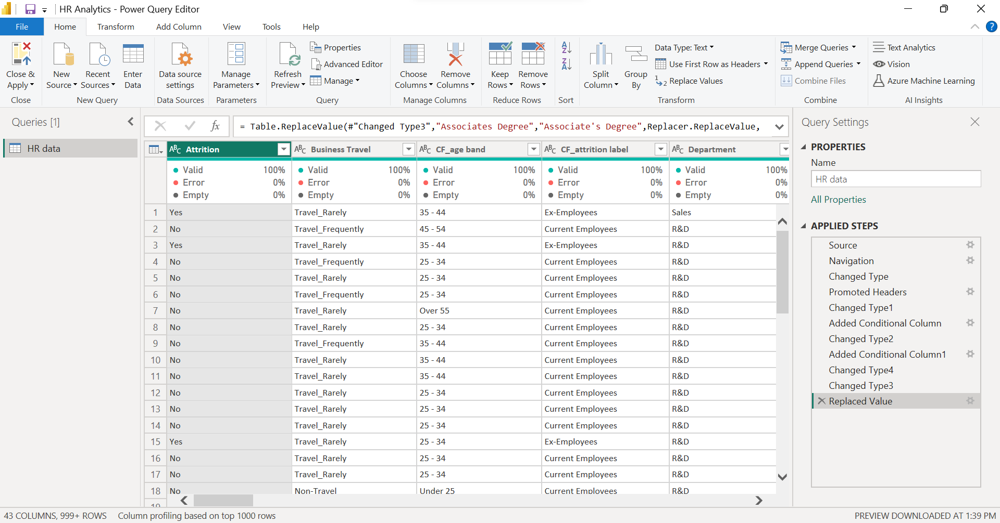
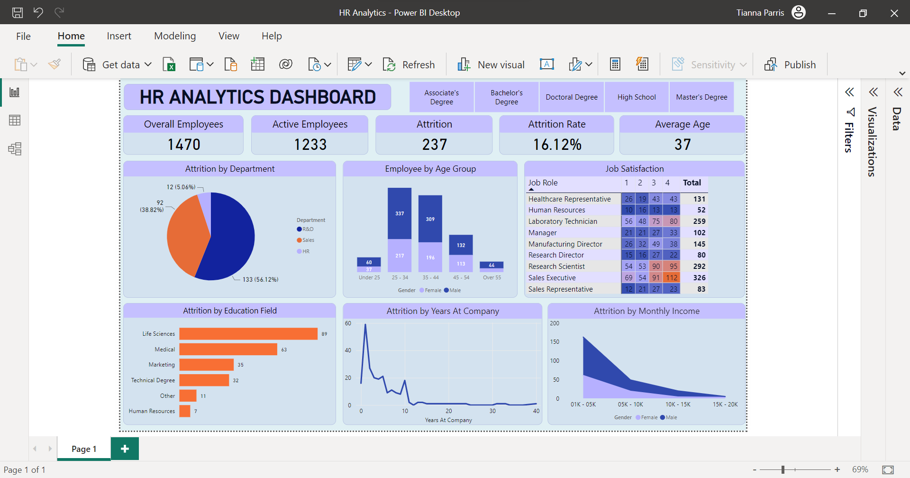

HR Analytics Dashboard: Analyzing Employee Churn
Goal
The HR Analytics Dashboard project aims to identify the factors contributing to employee churn and provide actionable insights to reduce employee turnover rate, improve employee retention, and enhance overall organizational performance.
Download from GitHub!Background Information
The dataset includes information about employees in the company. It contains various attributes such as the employee's age, gender, job role, education, department, and marital status. Other information in the dataset includes the employee's daily rate, monthly income, training history, work experience, job satisfaction, and performance ratings. Additionally, the dataset includes a column for attrition, which indicates whether an employee has left the company or is still employed.
Setup
The first step in the project involved data cleaning to ensure accurate analysis. This included removing any duplicate entries to avoid potential biases in the dataset. To facilitate better visualization of the data, I created age groups and ranges for monthly income. Furthermore, I verified that there was no missing data and that each field had the correct data type using Power BI's query tool.
Fig 1. This image shows the dataset after it was loaded.
These steps were essential to ensure that the data was properly formatted for analysis and would yield accurate results.
Dashboard Design and Creation.
With the processed data, I created a HR analytics dashboard that presents key insights on employee attrition. The dashboard includes charts showing attrition rates by department, age, salary, and job satisfaction, providing a comprehensive view of factors contributing to attrition within the company. These visualizations can help inform HR decision-making and guide targeted efforts to reduce attrition and retain valuable employees.
Fig 2. This image shows the HR Analytics Dashboard.
In addition to creating the charts mentioned earlier, I also added slicers to the HR analytics dashboard. These slicers allow the user to filter the data by various criteria such as department, job role, and education level. This provides a more dynamic and interactive user experience, allowing the user to explore the data in greater detail and gain deeper insights.
Conclusion
The HR analytics dashboard created using Power BI is a powerful tool for making informed decisions about employee attrition. It demonstrates my skills in data analysis and visualization. The skills I have acquired in this project can be applied to various industries and domains, helping organizations make data-driven decisions and achieve their goals.